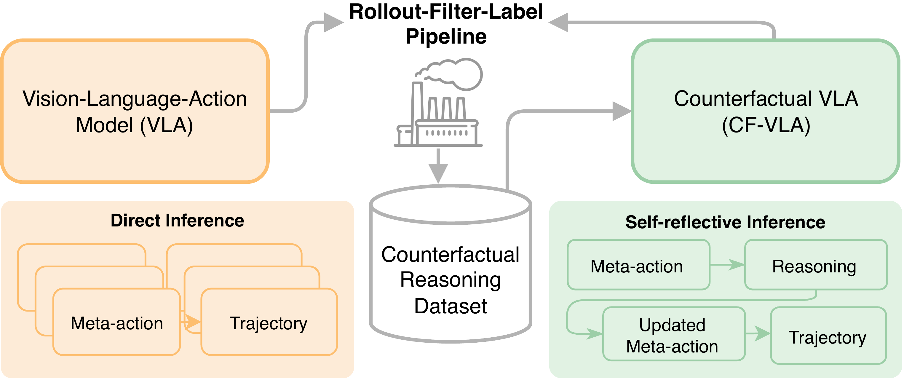
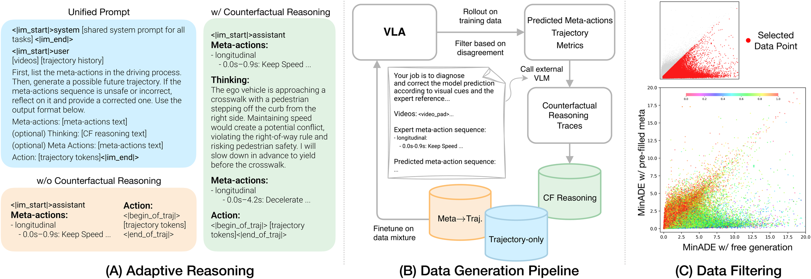
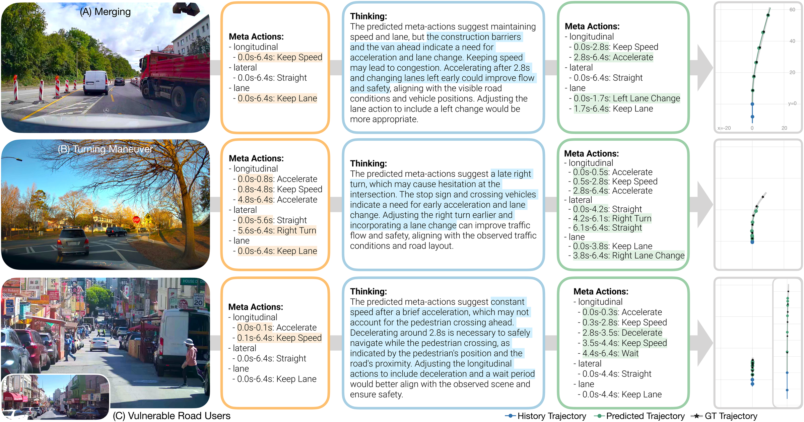

Recent reasoning-augmented Vision-Language-Action (VLA) models have improved the interpretability of end-to-end autonomous driving by generating intermediate reasoning traces. Yet these models primarily describe what they perceive and intend to do, rarely questioning whether their planned actions are safe or appropriate. This work introduces Counterfactual VLA (CF-VLA), a self-reflective VLA framework that enables the model to reason about and revise its planned actions before execution. CF-VLA first generates time-segmented meta-actions that summarize driving intent, and then performs counterfactual reasoning conditioned on both the meta-actions and the visual context. This step simulates potential outcomes, identifies unsafe behaviors, and outputs corrected meta-actions that guide the final trajectory generation. To efficiently obtain such self-reflective capabilities, we propose a rollout–filter–label pipeline that mines high-value scenes from a base VLA’s rollouts and labels counterfactual reasoning traces for subsequent training rounds. Experiments on large-scale driving datasets show that CF-VLA improves trajectory accuracy by up to 17.6%, enhances safety metrics by 20.5%, and exhibits adaptive thinking: it only enables counterfactual reasoning in challenging scenarios. By transforming reasoning traces from one-shot descriptions to causal self-correction signals, CF-VLA takes a step toward self-reflective autonomous driving agents that learn to think before they act.
CF-VLA equips a Vision-Language-Action model with a self-reflective reasoning loop. Instead of treating the initial plan as final, the model asks: “If I follow this plan, what would happen, and is that desirable?” — then revises unsafe or suboptimal actions before committing to the final trajectory.

Rollout: The current VLA generates candidate meta-actions and trajectories. Two sets are produced: free generation (model’s own meta-actions) and pre-filled (ground-truth meta-actions).
Filter: Trajectory disagreement identifies scenes where meta-actions are the bottleneck — the model performs poorly in free generation but matches expert behavior when meta-actions are correct.
Label: A teacher model generates concise counterfactual reasoning traces for filtered scenes, explaining why the predicted plan is suboptimal and how to adjust it.


@inproceedings{peng2026cfvla,
title = {Counterfactual VLA: Self-Reflective Vision-Language-Action
Model with Adaptive Reasoning},
author = {Peng, Zhenghao and Ding, Wenhao and You, Yurong and
Chen, Yuxiao and Luo, Wenjie and Tian, Thomas and
Cao, Yulong and Sharma, Apoorva and Xu, Danfei and
Ivanovic, Boris and Li, Boyi and Zhou, Bolei and
Wang, Yan and Pavone, Marco},
booktitle = {Proceedings of the IEEE/CVF Conference on Computer
Vision and Pattern Recognition (CVPR)},
year = {2026}
}